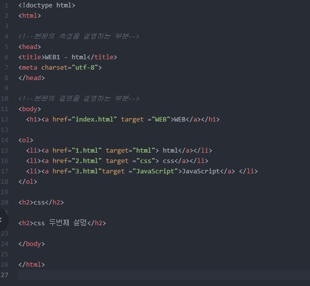

HTML이란 무엇인가?
HTML 이란 hyper text markup language의 약자로 쉽게 표현해서 초 정보를 담고 있는 일정한 형식의 언어 이다. hyper text, 초 문자란 하나의 텍스트에 아주 많은 정보를 담고 표현하는 것을 의미한다. markup은 같은 html에서도 우리가 쓰는 기호 문자에 따라 다른 읽기방식을 지원한다는 사실을 내포한다.
HTML이란 다시 말해서 많은 정보가 담긴 문자들의 나열 방식을 지정해서 우리가 읽을 수 있도록 해주는 일종의 규칙이다. 튼튼한 건물을 짓기 위해서는 다양한 요소들이 뒷받침되어야 한다. 흔들림없는 지반과 노동력, 건축할 수 있는 좋은 환경 등이 필요하고 특히 재료와 설계도가 그 중요성의 으뜸이다.
html을 잘 제작하기 위해선 이를 구성하는 설계 (문법의 각 순서와 자리, 필요이유)와 설계 내부에서 사용되는 재료(tag, css) 에 대해 훌륭히 이해하고 있어야 한다.
HTML의 설계도
html은 컴퓨터가 이해할 수 있도록 여러가지 문법을 이용해야 한다. 문법을 통해서 내가 나타내고자 하는 바를 컴퓨터로 구현할 수 있다.
사진1-내가 처음으로 작성한 HTML, 두근두근
HTML은 화살괄호 안에 어떠한 명령을 가진 '태그' 라는 문법을 통해서 작동한다. (사진1)을 보면, html의 전체적인 구조는 html태그 안에 head태그와 body태그로 구성된다.
html은 이것이 html2도 html5도 아닌 html 기본 버전이라는 것을 알려주는 태그이고, 그 안의 head는 이 html의 기본적인 속성과 디자인 ( css )을 표현하는 태그이다. body는 이 hrml에 어떤 정보를 담을 지 표현하는 태그이다. html과 head, body태그의 적절한 조화를 통해 우리는 우리가 꿈꾸던 홈페이지를 제작하고, 사람들이 보게끔 할 수 있다.
html의 기본재료, TAG
tag는 우리가 웹사이트를 더 명료하고 직관적으로 만들수 있는 기능을 제공한다. 제목과 내용을 선정할 수 있고, 경우에 따라 가벼운 디자인(밑줄이나 강조)까지 만들 수 있다. 태그의 종류와 갯수는 상당하지만, 모든 태그를 암기할 필요는 없다. 우리는 그저 필요할 때 검색해서 사용하면 될 뿐이다. 통계적으로 많이 쓰이는 태그 10개 정도만 알아두고 있다면 향상성이 크게 오를 것이다. 아래에 사용할 수 있는 태그 목록이 나와 있다.
[ HTML 태그 설명 ]
[ HTML 태그 설명(영 ) ]
곧 태그 사용 방법에 대한 항목을 추가할 예정이다.
알아보고 싶은 것 :
- css -> 글 자동 줄바꿈
- 파이썬은 문법 틀리면 아예 작동도 안되는데 html은 /body 이런걸로 마무리 안해줘도 그냥 작동되던데 이유는?